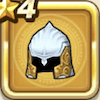

プラチナヘルム
攻略班 5.5点 / 毒耐性+5%けもの系への耐性+10%麻痺耐性+5%
くわしい特徴
【レベル別習得スキル】 Lv1毒耐性+5% Lv4けもの系への耐性+10% Lv6麻痺耐性+5% Lv8守備力+4 Lv10さいだいHP+3 Lv16すばやさ+3 Lv20守備力+4 【限界突破スキル】 1凸毒耐性+5% 2凸守備力+2 3凸すばやさ+3 4凸さいだいMP+3

攻略班 5.5点 / 毒耐性+5%けもの系への耐性+10%麻痺耐性+5%
【レベル別習得スキル】 Lv1毒耐性+5% Lv4けもの系への耐性+10% Lv6麻痺耐性+5% Lv8守備力+4 Lv10さいだいHP+3 Lv16すばやさ+3 Lv20守備力+4 【限界突破スキル】 1凸毒耐性+5% 2凸守備力+2 3凸すばやさ+3 4凸さいだいMP+3